池・噴水の藻対策に。
殺藻・防藻剤 アクアガード。
掃除してもすぐ藻が生える、池の水が緑色になる、アオコで景観が悪くなる——そんなお悩みに。低コスト・低毒性でありながら、強力な殺藻・防藻効果が長く続く。塩素系不使用で塗装面にも安心。魚類が泳ぐ池にも対応できる薬剤です。
製品ラインナップを見る池や噴水の藻・アオコで、
こんなお悩みありませんか。
- ✓掃除してもすぐに藻が発生する
- ✓池や水景設備の水が緑色になる
- ✓アオコや藻で景観が悪くなってしまう
- ✓定期的な清掃作業の負担が大きい
- ✓魚がいる池でも使える薬剤を探している
- ✓施設に合った藻対策の選び方が分からない
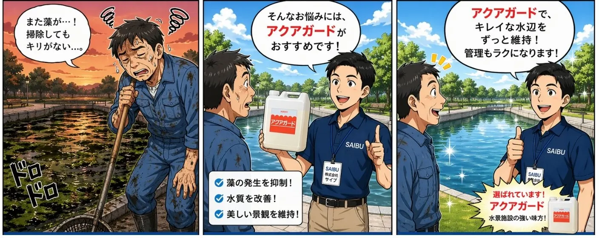
殺藻剤の決定版。
アクアガードシリーズ。
池やプールなどの水回りで、藻が気になることはありませんか。「低コストで低毒性、手軽に使えてその上効果が持続する薬品があったら」という声に応えて生まれたのが、アクアガード・シリーズです。
アクアガード・シリーズは、藻に対して極めて強い殺藻・防藻効果のある低毒性の薬剤です。ゴルフ場の池、錦鯉の池、屋外プールなど、様々なシーンで活躍しています。
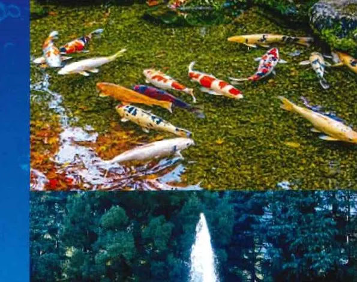
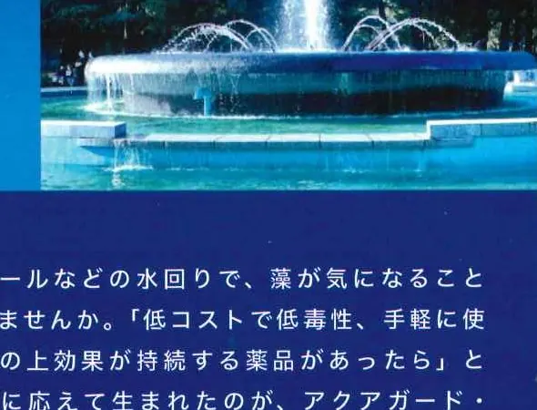
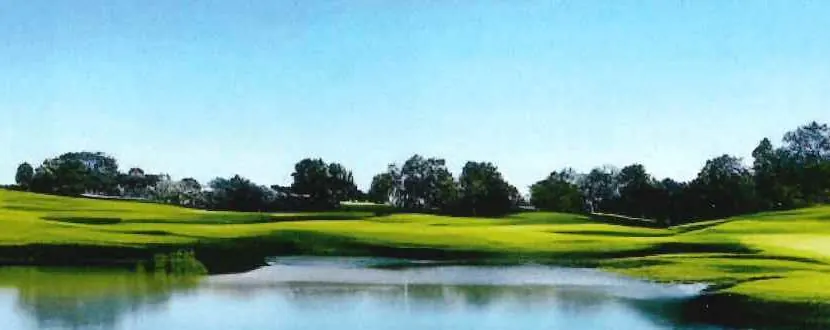
低毒性・長期持続・環境配慮。
水環境を守る3つの力。
低毒性・塩素系不使用
塩素系の薬品を一切使用していないため、塗装面にも安心して使用できます。人や生態系への影響を抑えながら、確実な殺藻・防藻効果を発揮します。
魚類が泳ぐ池にも使える
錦鯉や観賞魚が生息する池でも安心して使用できるタイプを用意しています。用途や環境に合わせて最適な製品をお選びいただけます。
長期持続・コスト効率
一度の投入で長期にわたり効果が持続し、繁雑なメンテナンスを大幅に削減。特にゲルタイプは徐放性設計で、長期間の防藻効果を発揮します。
池・噴水・プールなど、
幅広い水環境に対応。
写真・製品情報で確認できている主な使用シーンをご紹介します。施設の状況に合った製品は個別にご相談ください。
用途に合わせて選べる、
4つのラインナップ。
シーンや目的に応じて最適なタイプをお選びください。


安全・低毒性で、魚類が生息している池の殺藻対策として最適。定期的なメンテナンスに。
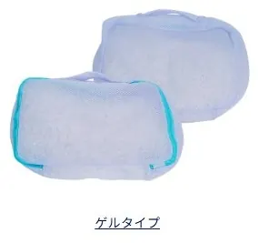
少ない投入回数で長期間防藻効果が持続します。海藻由来の天然成分を使用した徐放性タイプ。
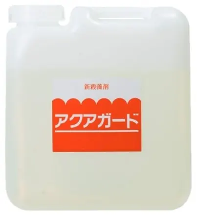

屋外プールで藻類が発生した際に。ろ過器を停止して投入し、一昼夜置いた後にろ過。殺藻凝集効果あり。

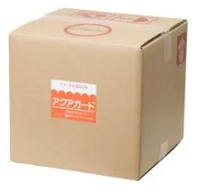
シーズンオフのプールの防藻に。冷却水・貯水槽にも対応。ろ過器停止後に投入するだけの簡単メンテナンス。
| 商品名 | 主な用途 | 対象 | 使用方法・使用量 | 荷姿 | おすすめのケース |
|---|---|---|---|---|---|
| FSX-1 | 魚類のいる池の殺藻対策 | 魚類が生息する池 | 水100㎥に対しFSX-1を5kg投入 | 5kgポリ容器／20kgQB | 錦鯉や観賞魚がいる池を定期的にメンテナンスしたい方に |
| ゲルタイプ | 魚類のいる池の長期防藻 | 魚類が生息する池 | 水100㎥に対し6kgのゲルを複数ヶ所に分けて投入 | 6kg（3kg袋×2袋） | 投入の手間を減らし、効果を長く持続させたい方に |
| B-77 | 屋外プールの藻類発生時 | 屋外プール | 水100㎥に対しB-77を1〜2kg投入、翌日十分にろ過 | 5kgポリ容器／20kgQB | プールに藻が発生してしまい、すぐに対処したい方に |
| D-50 | シーズンオフのプール防藻 | 屋外プール・冷却水・貯水槽 | ろ過器停止後、水100㎥に対しD-50を5kg投入 | 5kgポリ容器／20kgQB | シーズンオフ中の防藻を簡単なメンテナンスで済ませたい方に |
「また藻が生えてきた…」
そのお悩みを、解消する。
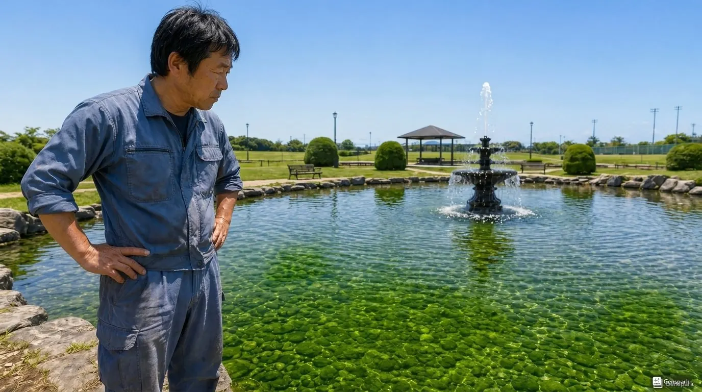
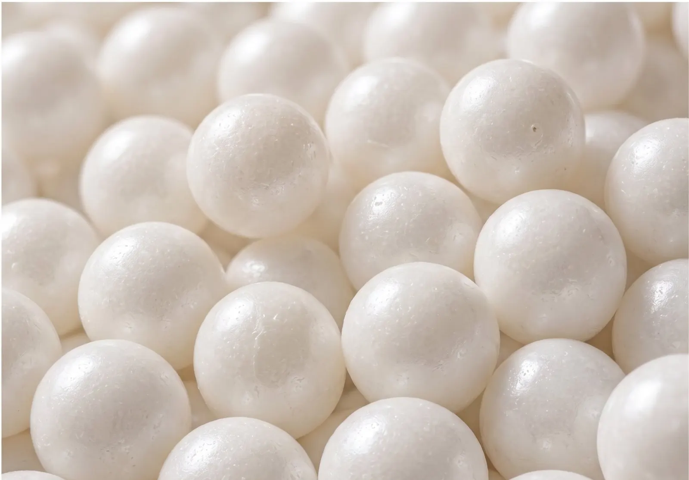
「殺藻剤を撒いてもすぐ生えてくる。頻繁に作業するのも大変…」そんな現場の声に応えて生まれたのが、アクアガード ゲルタイプです。
海藻由来の天然アルギン酸を使用したゲルカプセルを池に投入するだけ。有効成分がゆっくりと溶け出す徐放性設計で、少ない投入回数で長期間の防藻効果を発揮します。魚類が生息する池にも安心してご使用いただけます。
ゲルタイプだから、ゆっくり溶けて長く効く。液剤のように短期間で効果が切れません。
頻繁な散布が不要で、作業負担を大幅に軽減。入れっぱなしでOKです。
環境にやさしく、池に生息する魚などの生き物への影響が少ない。安心してご使用いただけます。
水温等によって徐放量が変化。薬剤があるうちは入れっぱなしで大丈夫です。
ゆっくりと有効成分を放出することで、長期間にわたって藻の発生を抑制します。自然由来のアルギン酸を使用しており、環境にも配慮したタイプです。魚などの生き物が生息する水域にも適しています。
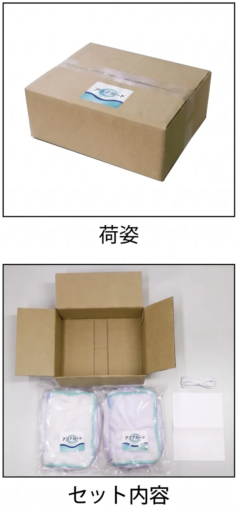
実際の池で投入前後を比較した実例写真です。アオコや藻が大幅に減少し、水面の状態が改善されているのがわかります。
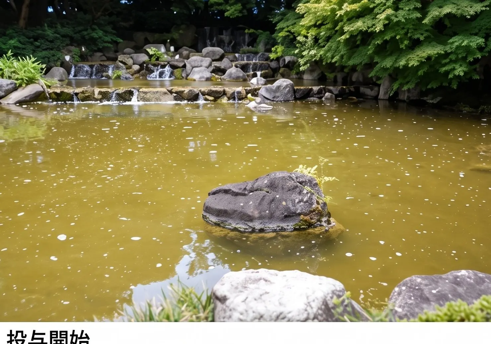
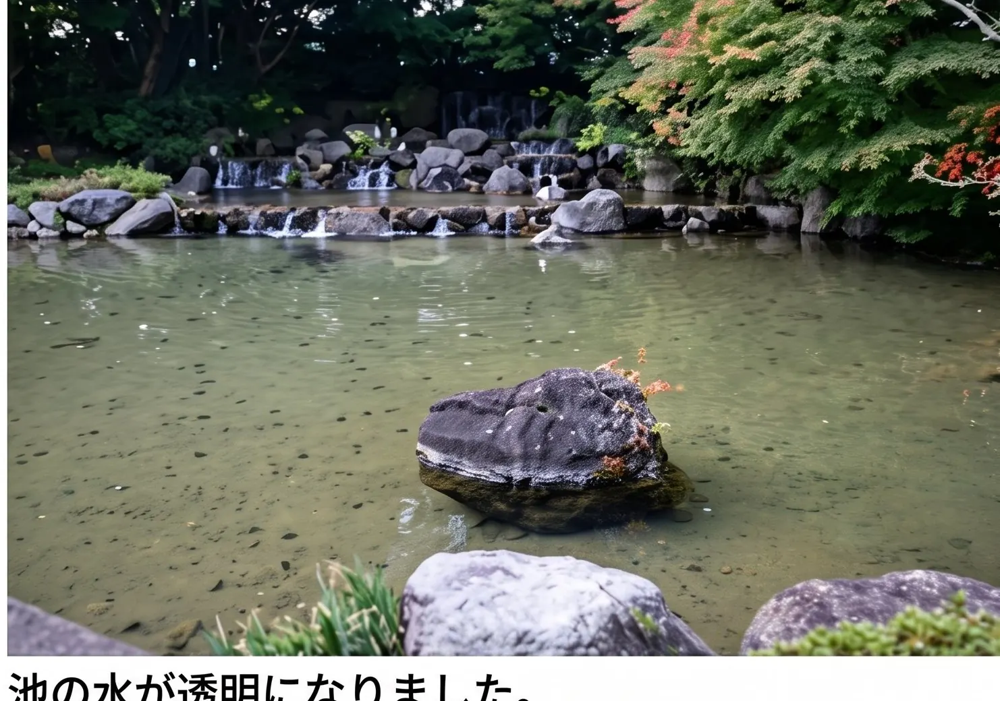
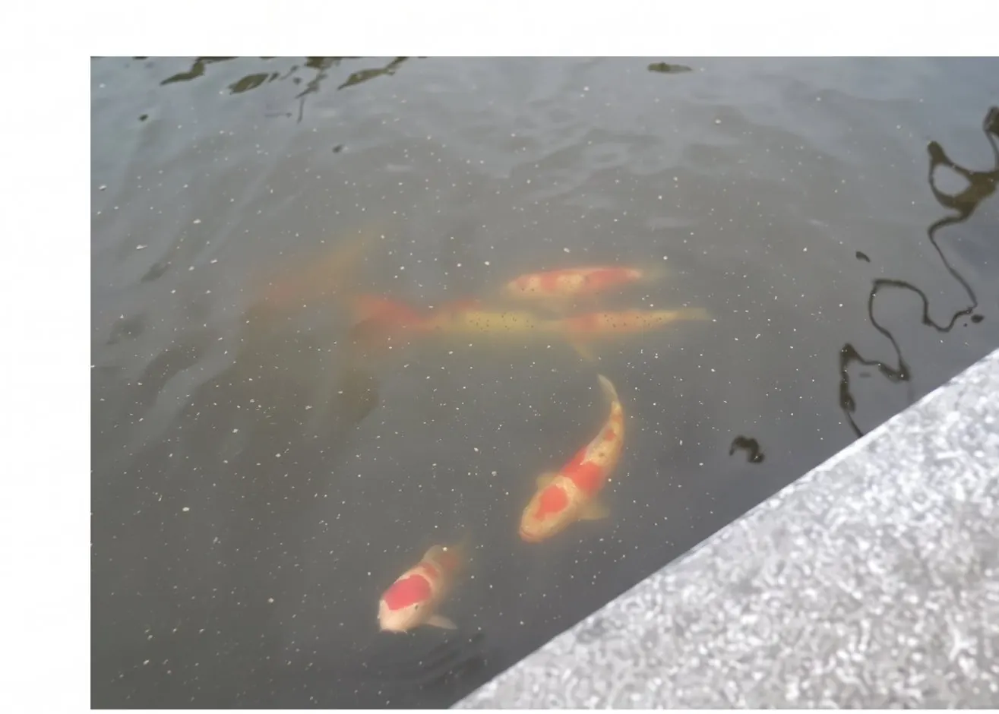
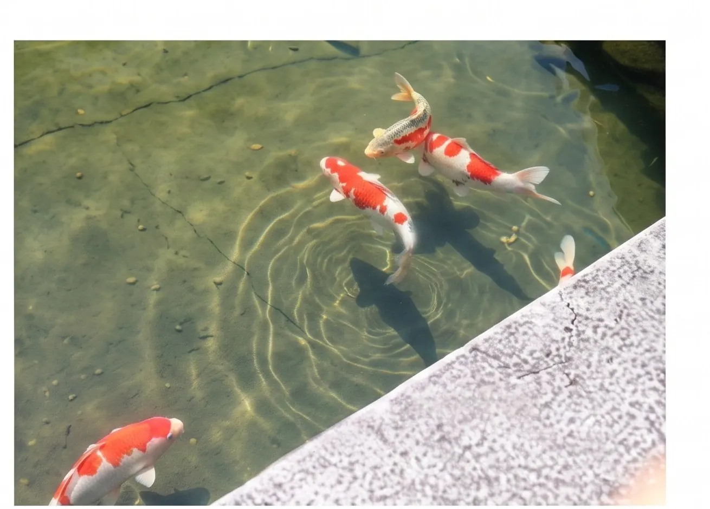
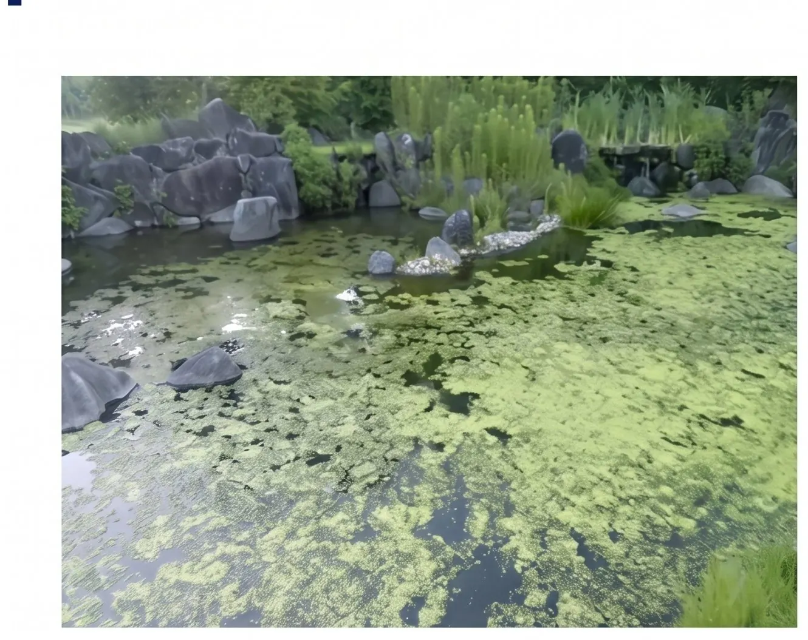
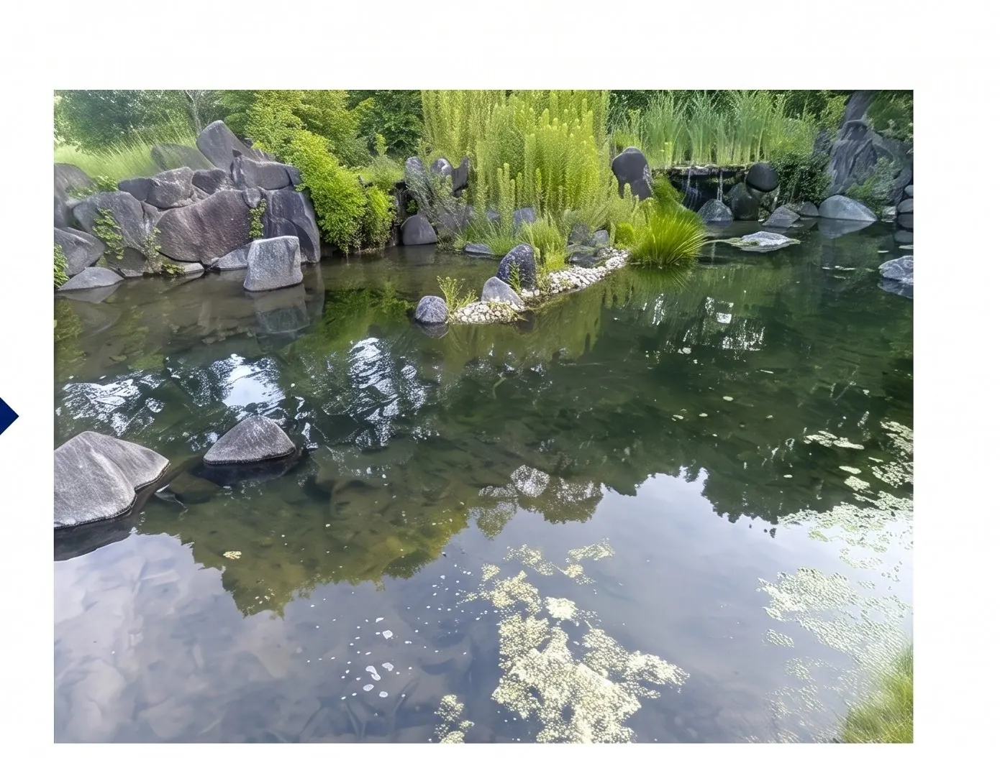
池の水量に合わせて、
必要な使用量を計算します。
使用量は水量（㎥）を基準に算出します。専門知識がなくても、下記の目安量を参考にご検討いただけます。
| 商品名 | 使用量の目安 | 使用方法 |
|---|---|---|
| FSX-1 | 水100㎥に対し 5kg | 池に投入します |
| ゲルタイプ | 水100㎥に対し 6kg | ゲルを複数ヶ所に分けて投入します |
| B-77 | 水100㎥に対し 1〜2kg | ろ過器を停止して投入し、一昼夜置いた後にろ過します |
| D-50 | 水100㎥に対し 5kg | ろ過器停止後に投入します |
※ 池の形状や水量の測り方によって必要量は変わります。正確な水量の算出方法や、複数の製品を組み合わせた使い方については、お問い合わせの際にご相談ください。
アクアガードについて、
よくいただくご質問。
A. アクアガードシリーズは池や噴水の藻対策・殺藻剤としてご使用いただけます。緑色に色づくアオコ（藍藻類）が気になる場合は、関連製品の沈降剤「クリアウォーター」もあわせてご案内しておりますので、状況に応じてご相談ください。
A. 噴水を含む水景設備でのご使用実績があります。設備の構造や水量によって適した製品が異なりますので、詳しくはお問い合わせください。
A. FSX-1とゲルタイプは、魚類が生息する池での使用を想定した低毒性の製品です。錦鯉や観賞魚がいる池でもご使用いただけます。
A. 魚がいる池には「FSX-1」または「ゲルタイプ」、屋外プールで藻が発生した場合は「B-77」、シーズンオフのプール防藻には「D-50」が目安です。詳しい選び方は製品ラインナップの比較表もご参照いただくか、お問い合わせください。
A. 池やプールの水量（㎥）を基準に計算します。各製品とも「水100㎥あたり◯kg」を目安としており、実際の水量に応じて比例計算します。詳しくは使用方法・使用量のセクションをご覧ください。
A. 製品によって異なります。ゲルタイプは徐放性設計のため投入回数を抑えられ、FSX-1は定期的なメンテナンスに、B-77は藻類発生時に随時ご使用いただく製品です。使用環境によっても異なるため、詳しくはお問い合わせください。
A. ゴルフ場の池や庭園の池など、業務用・施設向けの用途でもご使用いただいています。施設の規模や水量に応じた製品選定については、お気軽にご相談ください。
製品のご相談・お問い合わせ。
製品のご選定から使用方法まで、専門スタッフがていねいにご対応いたします。
福岡市博多区美野島3-14-6